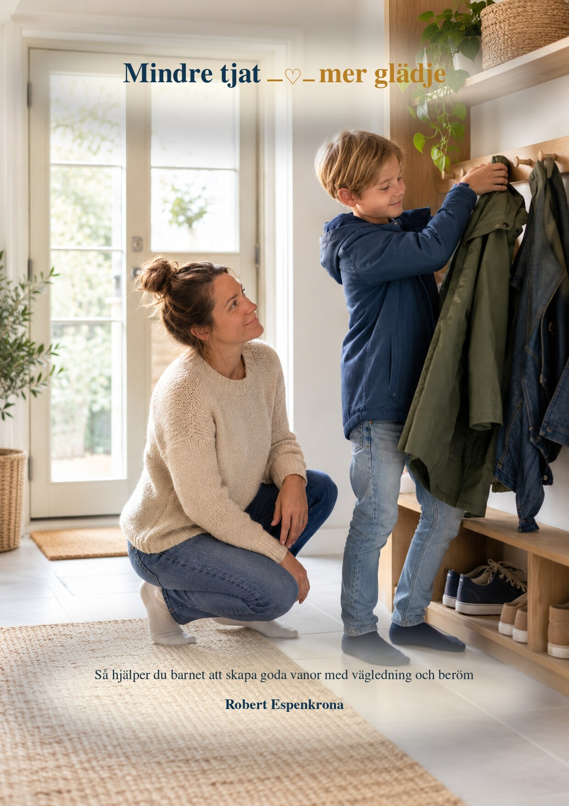
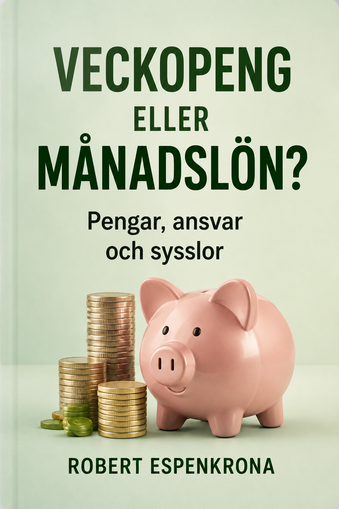

Mindre tjat – mer glädje
Så hjälper du barnet att skapa goda vanor med vägledning och beröm.
Läs merFörfattare och metodskapare
Böcker om metoder och idéer för människor som vill skapa mer struktur, lugn och bättre resultat i livet.
Här samlar jag mina böcker och praktiska metoder inom föräldraskap, barns ansvar och ett lugnare familjeliv.

Så hjälper du barnet att skapa goda vanor med vägledning och beröm.
Läs mer
Ett praktiskt och funktionellt sätt att skapa struktur kring barns pengar, ansvar och sysslor i hemmet.
Läs merBoken säljs inte för tillfället. Just nu erbjuder vi Femdagarsmodellen som en tjänst för företag som vill hjälpa uppsagda medarbetare vidare till nytt arbete.
Läs om Femdagarsmodellen för företag